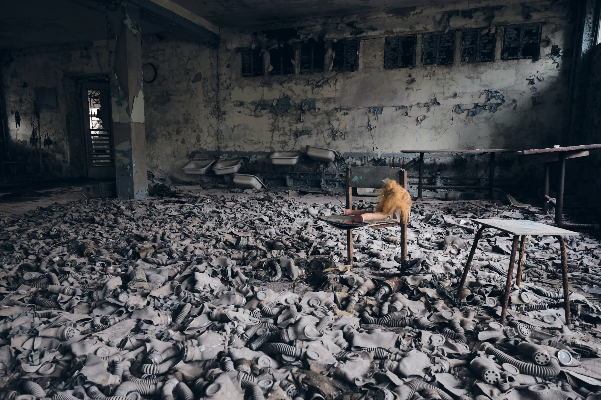
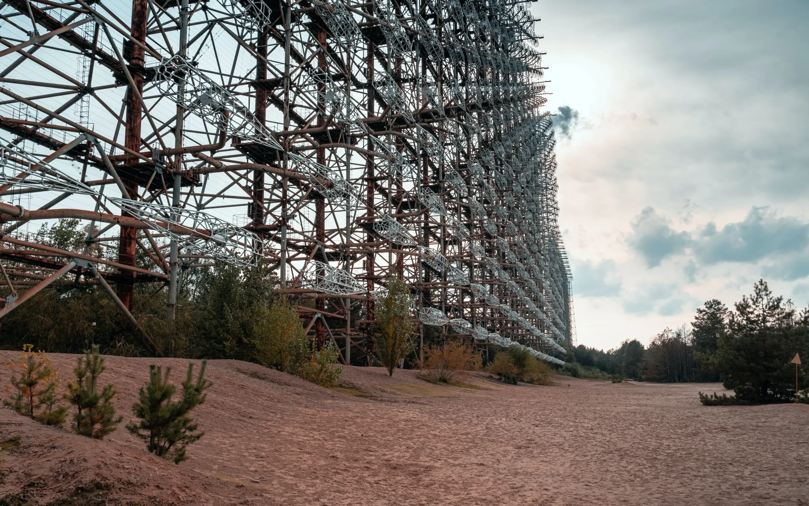

Chernobyl Disaster
The Chernobyl disaster is, to date, the most severe nuclear disaster in the recorded history of mankind. Many people still believe that reactor number 4 at the Vladimir I. Lenin Nuclear Power Station exploded because it became a nuke and a nuclear explosion took place. This is not exactly true. Though the nuclear reaction spiraled out of control, it did not cause the explosion or the catastrophe. This is the science behind the Chernobyl disaster.
I've watched every documentary and dramatization of this night that I could find, and the thing that stays with me isn't the fire or the radiation — it's how ordinary the whole thing sounds right up until it doesn't. A routine safety test, postponed by a few hours, run by a night shift that hadn't planned for it. No sirens. No warning. Just a sequence of small, defensible decisions that happened to line up in exactly the wrong order. Understanding how, mechanically, that happened is what turned this from a story I found unsettling into one I couldn't stop reading about.
The central component which can be rightfully credited as the main culprit in the disaster is graphite. The reactor type used at Chernobyl was the RBMK-1000 (Reaktor Bolshoy Moshchnosti Kanalniy), a Soviet design built for a very specific reason: unlike most Western reactors, it could be refueled while running, and its plumbing could — if the political will was there — be adapted to breed weapons-grade plutonium alongside civilian electricity. That dual-purpose ancestry shaped almost every compromise baked into its design. Its designers claimed it to be the “safest” reactor, since it supposedly could not cause any explosion. Later research revealed that it had several key flaws that could pile up to become catastrophic: the active removal of decay heat, the graphite displacer ends of the control rods, a positive void coefficient, and the fact that this reactor type was very unstable at lower power levels.

RBMK is a generation-II graphite-moderated, light-water-cooled reactor. So what is a moderator in a nuclear reactor? When an atom splits, it releases neutrons at near the speed of light. At this speed it becomes highly unlikely that the neutrons will strike the next atom. A neutron flux moderator — the name comes from the fact that it moderates neutron speed — is introduced into the reaction, in this case graphite. The neutrons slow down as they bounce around inside the moderator until they travel slowly enough to split more atoms. Each graphite block has a hole down the center that contains the pipes for the fuel channels and control rods. Water, the coolant, flows inside these channels at very high pressure.
Now, what are control rods? In simple terms, they are the on/off switch and the way to set and control the power level of a reactor. The control rods are made of very strong neutron poisons — materials that are strong neutron absorbers — like cadmium, hafnium, indium, or in our case, boron. If all the rods are inside the core, they kill the nuclear chain reaction; if 80% of them are withdrawn, the reactor runs at the full speed for which it was designed. When the control rods are withdrawn they leave an empty space in the channels. The lower end of the rods, made of graphite, was designed to fill this void — graphite is an efficient steam displacer and also increases reactivity since it too is a neutron flux moderator. Ideally this part should have been made of boron, but graphite made the reactor cheaper and the control rods twice as efficient.
Due to this design flaw, the control rods caused a momentary power surge precisely when they were meant to kill the reaction. To make matters worse, the graphite tips were not made long enough to reach the base of the reactor, so some void was still left in the base when they were inserted. None of this was very critical while the reactor was functioning normally, but then a safety test came into the picture, and that is what pushed everything into catastrophe. The test was meant to simulate a blackout condition, in which the pumps circulating fresh coolant water would die and, before the backup generators came online, it would be too late. The goal was to see whether the energy from the reactor's own dying turbine could keep the pumps running in that gap. For this, the reactor had to be kept in low power mode — 700MJ instead of the ideal 3200MJ — to simulate a blackout condition.

One more factor came into play because of the RBMK's instability at low power levels: xenon. Xenon is a very strong neutron poison, and at full power the reactor burns this xenon away. The test was postponed on the day it was meant to take place, and this caused severe xenon poisoning in the core — poisoning that went beyond recovery. The only safe solution at that point was to shut the reactor down and restart it after 24 hours, a basic reactor rule: never start a reactor that has been poisoned. But the staff decided to proceed with the test anyway. To bring the power up to the desired test levels, the controllers pulled out all the control rods from the reactor, but the poisoning was so strong that the best they could achieve was 500MJ. They proceeded with the test regardless. The pumps were shut down, and now the reactor's reactivity was unchecked — fresh coolant, no control rods — so it swung instantly back to a highly reactive state and power began to rise.
There was something in RBMK reactors called the positive void coefficient, which basically means that with more steam, reactivity increases. Whatever coolant remained in the reactor channels instantly evaporated, the xenon burned away, and reactivity began to spiral out of control. The operators, seeing this, panicked and pressed the AZ-5 button, the kill switch of the reactor. But as soon as the control rods began to insert, their graphite tips touched the fuel channels, and reactivity spiked — evaporating the remaining liquid in the hydraulic channels of the control rods and fixing them in place, endlessly increasing reactivity. Within minutes, the reaction had evaporated every last drop of water in the reactor, raising the pressure so much that it blew the reactor lid off, exposing the fissioning core to oxygen. Hence, the explosion.
What followed the blast is, in some ways, just as difficult to sit with as the physics of it. The nearby town of Pripyat, home to roughly fifty thousand people who worked at or around the plant, wasn't evacuated for more than 36 hours — officials assured residents there was nothing to worry about, even as radiation levels climbed to hundreds of times the safe limit a few kilometers away. Firefighters were sent onto the roof of the burning reactor building without being told what they were actually dealing with; many of the first responders who fought the fire that night later died from acute radiation sickness. In the months that followed, hundreds of thousands of so-called liquidators — soldiers, miners, engineers — were brought in to bury the reactor under a concrete and steel sarcophagus, working in shifts short enough that no single person absorbed a lethal dose, but long enough, collectively, to get the job done. An exclusion zone roughly the size of a small country was drawn around the plant, and much of it remains uninhabited to this day.
Who is to blame for this? Operators? Definitely. Design engineers? For sure. The government, for the cover-up? Yes. But at the end of it, the claim that an RBMK core can't explode on its own, unless pushed to the edge, was technically true — the Chernobyl explosion was caused by gases and water vapor, not a nuclear blast. There were so many lies involved that Professor Valery Legasov — the scientist appointed by the Central Committee of the Soviet Union to handle the crisis — said this in his voice notes, before committing suicide:
“When the truth offends, we lie and lie, until we can no longer remember it is even there. But it is still there. Every lie we tell incurs a debt to the truth. Sooner or later, that debt is paid. I ask now, what is the cost of Lies?”
What stays with me about Legasov's question is that it isn't really about nuclear engineering at all. Every one of the design flaws that caused Chernobyl was known, on paper, well before that night — to someone, in some report, filed away because admitting it would have meant admitting the reactor design that powered a large part of a superpower's grid wasn't as safe as claimed. The graphite tips, the positive void coefficient, the instability at low power: none of it was a mystery in April 1986. It was a debt, quietly accruing interest, waiting for the one night the safety margins ran out at the same time the truth did.